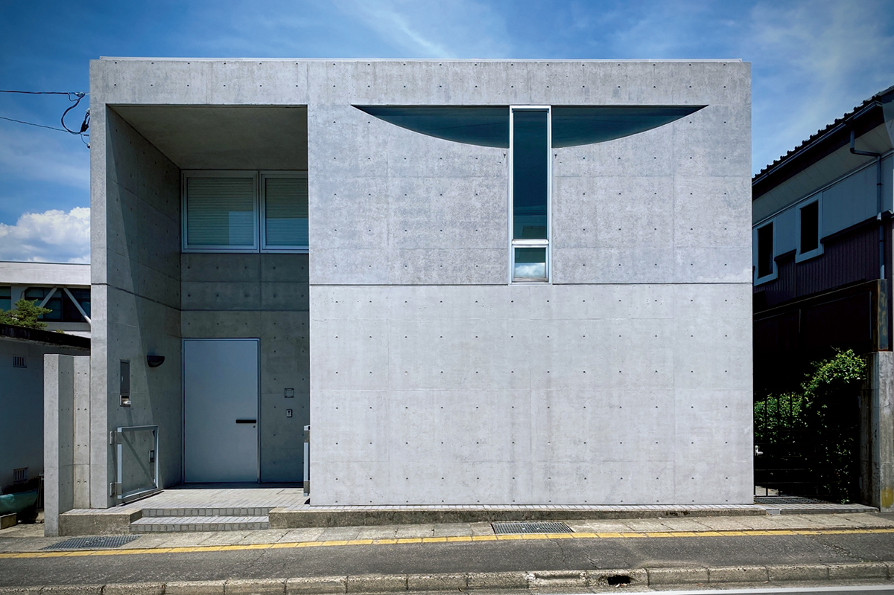
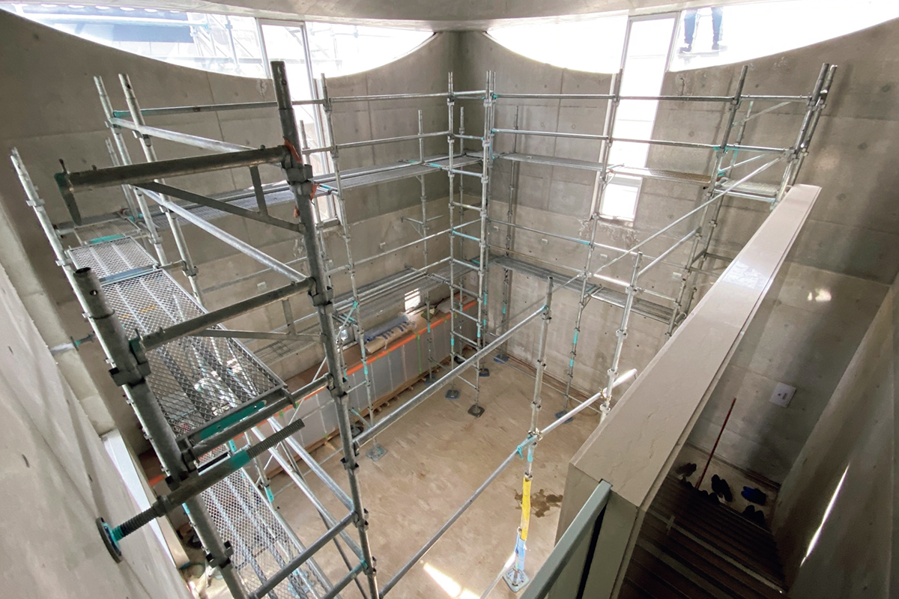
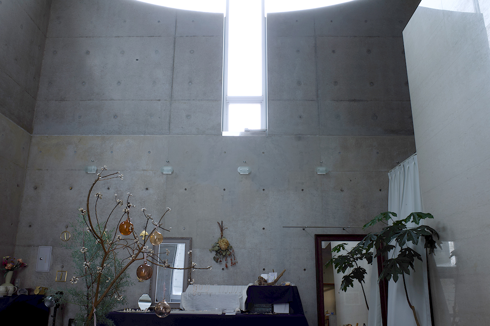
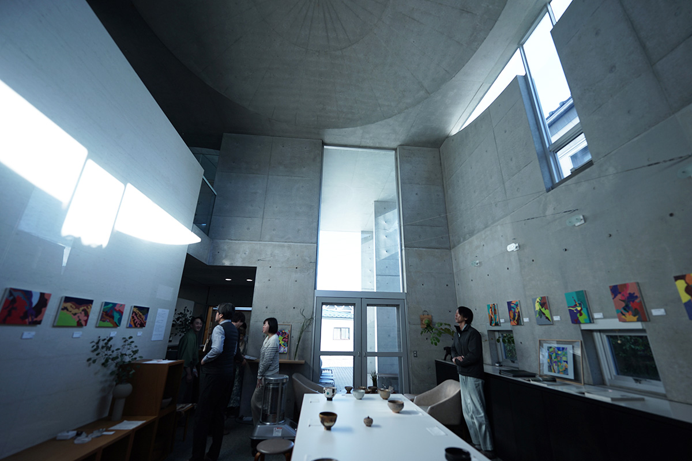
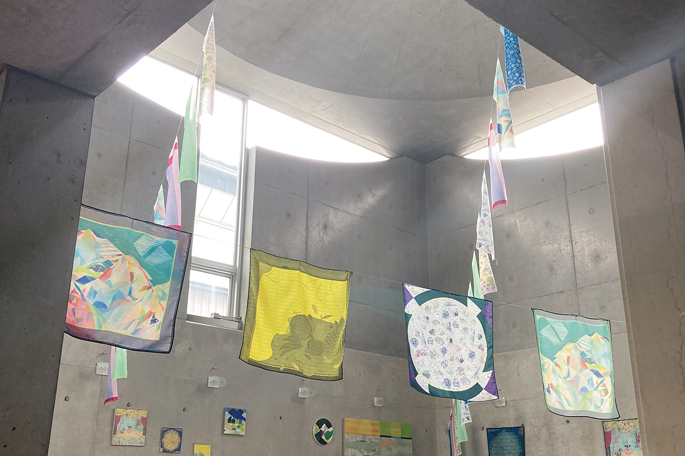
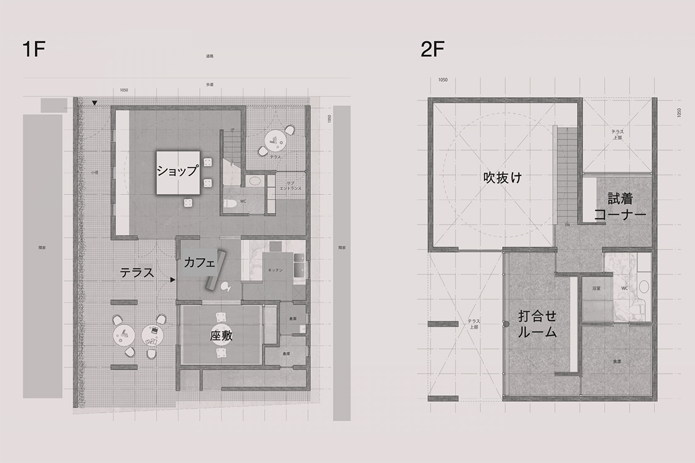

Префектура Фукуи · Кацуяма · архитектура
nimbus в Кацуяме: дом Араты Исодзаки, куда можно войти

Частные дома великих архитекторов обычно закрыты для посторонних. nimbus в Кацуяме как раз такое исключение: дом, который Арата Исодзаки построил в 1986 году, стал магазином с маленьким кафе, и войти в него может любой.
Архитектор
Дом, похожий на общественное здание
В центре Кацуямы, небольшого города на востоке префектуры Фукуи, среди обычных домов стоит здание из голого бетона. Это nimbus, частный дом, построенный в 1986 году. Проект сделал Арата Исодзаки вместе с ещё одним архитектором. Внутрь пускают всех желающих, и пространство можно не только разглядывать на фотографиях, но и почувствовать самому.
Для Исодзаки частные дома с самого начала были полем для экспериментов: здесь он проверял новые идеи. Но дом остаётся домом, и попасть внутрь такой работы удаётся редко. nimbus как раз один из немногих случаев, когда это возможно.

Снаружи дом выглядит аккуратной коробкой и не спорит с улицей. Выделяются только окна необычной формы, прорезанные в стенах: они намекают, что внутри всё устроено иначе. И действительно, за дверью открывается пространство, которого не ждёшь от фасада. Зал высотой в два этажа когда-то служил гостиной, но его хочется назвать не комнатой, а просто пространством.
Свет
Шар в потолке и небо в окнах
Обычных окон, как в жилом доме, здесь нет. Кроме окон-скульптур, на противоположной от улицы стороне стекло поднимается до самого потолка. Вместе с высокими стенами из бетона это создаёт ощущение общественного здания, хотя перед нами жилой дом.

В центре потолка круглая выемка. Кажется, будто в квадратную плоскость вдавили шар, и построить такое можно было только с очень высокой точностью. Этот круг даёт пространству ясный центр и впускает в закрытый зал ощущение неба и небесных тел. Окна, которые снаружи так бросаются в глаза, изнутри показывают только небо. В разное время дня свет падает по-разному, тени ползут по полу и стенам, и свет здесь работает как архитектурный элемент.

Вторая жизнь
Магазин между небом и землёй
В 2022 году дом перестроили под магазин nimbus с небольшим кафе, и с тех пор здесь можно задержаться и побыть наедине с архитектурой. Перестройкой занимались архитекторы из Технологического университета Фукуи и бюро LoHA. Больших перемен не делали: дом лишь «настроили» под новое дело. Размеры витрин и мебели вывели из порядка, заложенного в исходном проекте, а материалы пола и мебели подобрали так, чтобы они сочетались с бетоном. Архитекторы читали замысел Исодзаки и бережно встраивали в него новую жизнь.

nimbus задаёт вопрос: сколько событий способен вместить жилой дом? После перестройки характер пространства стал только яснее, и здание продолжает показывать Кацуяме, на что способна архитектура.

nimbus
- Адрес
- префектура Фукуи, Кацуяма, Мотомати, 1-1-36
- Телефон
- +81 779-64-5103
- Часы работы
- 12:30–17:30
- Выходные
- нерегулярные, объявляются в официальном Instagram
- Цены / Вход
- вход свободный
Фото: лаборатория Симидзу, Технологический университет Фукуи.